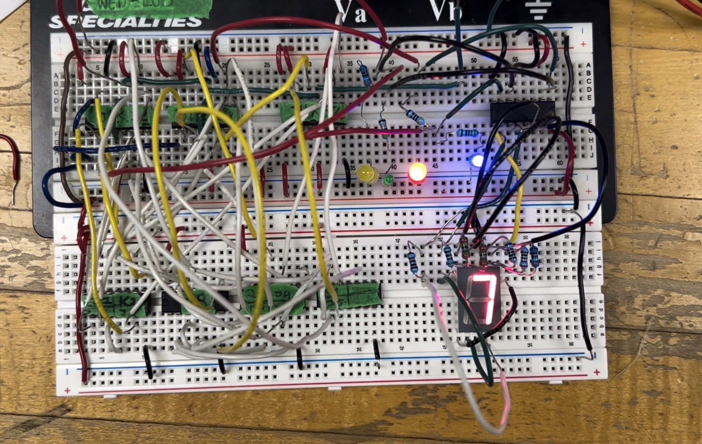
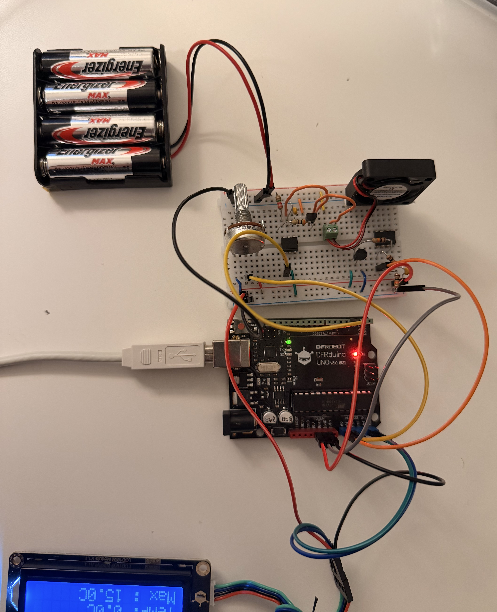
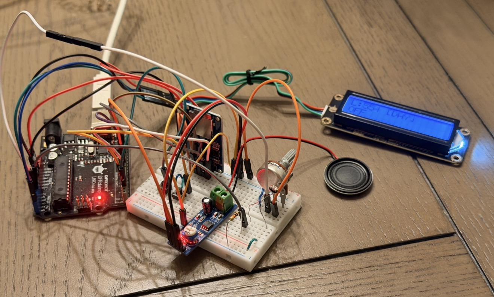
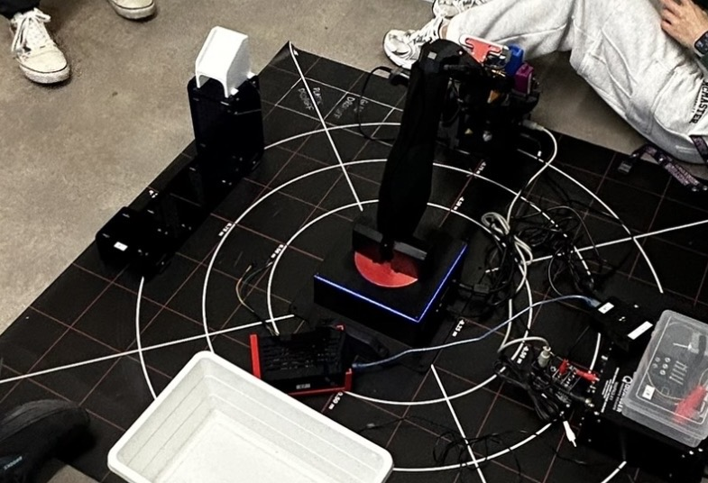
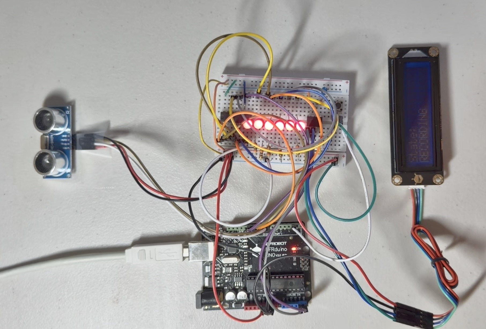
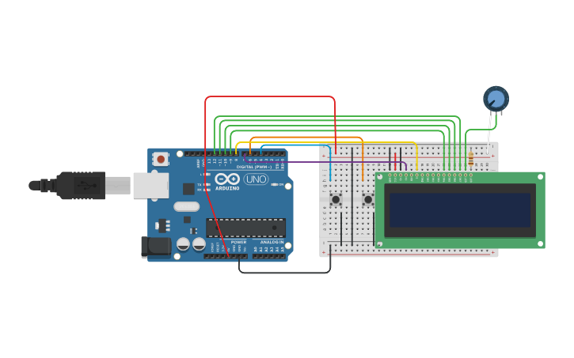
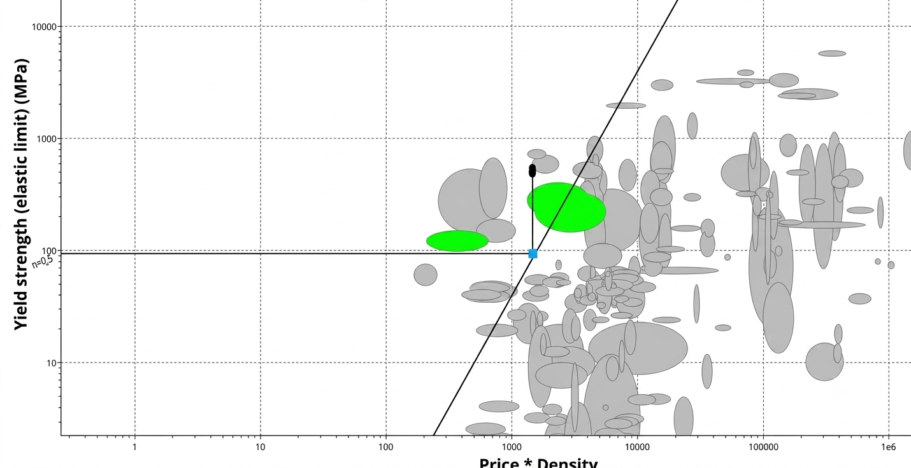

Full-stack maintenance management platform that enables users to track service history, manage personal assets, schedule preventive maintenance, analyze maintenance costs, and discover local service providers through Google Places API integration. Designed to improve maintenance planning and reduce unexpected repair costs.
| Node.js | MongoDB | JavaScript | HTML/CSS | Google Places API | Axios |

Synchronous digital system designed to cycle a unique sequence across a
7-segment display. Its purpose is to implement an optimized state transition sequence using hardware memory
elements while minimizing physical gate count and visual wiring clutter.
| JK Flip-Flops | Karnaugh Maps (K-Maps) | BCD Decoding | Multisim | Digital Logic | FSM |

Automated thermal regulation system that uses an Arduino Uno,
temperature sensor, LCD display, and cooling fan. Its purpose is to prevent electronics from
overheating by dynamically activating a motorized fan only when a user-set temperature limit is crossed.
| OpAmp | Optocoupler | N-Channel MOSFET | LM35 | LCD |

Sensor-driven embedded system designed to improve user sleep
environments by dynamically responding to changing ambient
light levels. Its purpose is to automate audio playback using real-time
light sensing, non-blocking user controls.
| FSM | TMRpcm | PWM | SD Card SPI | Hardware Interrupts | Amplifier |

Mechatronic sorting and transit network combining an automated Python data pipeline with a physical Q-Arm robotic mechanism. Its purpose is to optimize international airport logistics by integrating real-time barcode scanning, passenger layover tracking, and rack-and-pinion slide hardware to safely automate luggage routing.
| Python | Q-Arm Robotics | Rack & Pinion Mechanism | CAD Modeling | Raspberry Pi |

Real-time telemetry system engineered to record and replay distance data patterns using an Arduino Uno and an ultrasonic sensor. Its purpose is to track distance variations, map them onto a serialized 6-level LED bar graph, and manage data logging within an external non-volatile memory chip for persistent playback across system power cycles.
| I²C Protocol | 24FC64 EEPROM | 74HC164 Shift Register | Non-Volatile Storage | Hardware Interrupts |

Embedded response-measurement system designed using the Garbini Finite State Machine (FSM) methodology. Its purpose is to accurately capture human reaction times by deploying non-blocking hardware timer interrupts, coordinating randomized visual cue delays, and tracking user performance benchmarks via a dynamic LCD interface.
| Garbini FSM | TimerOne Interrupts | Event-Driven Programming | TimeOut Callback Logic | Peripherals Integration |

Sustainable environmental protection system designed to purify industrial water runoff from a nuclear power plant.
Its purpose is to safeguard public health in a local community by utilizing advanced material selection software to engineer a high-porosity Polypropylene nanofilter
capable of trapping radioactive particles down to a 1–2 nm scale.
| ANSYS Granta EduPack | Nanofiltration | Material Performance Index (MPI) | Eco-Audit & LCA | Environmental Regulation | Team Management |
Closed-loop control system that regulates dynamic balancing using an Arduino Uno, ultrasonic feedback, and a servo motor.
Its purpose is to simulate smart, obstruction-aware system responses by executing real-time corrections through
an integrated mechanical and embedded design.
| PID | Mealy FSM | Embedded C++ | PWM | SPI Protocols | SolidWorks |